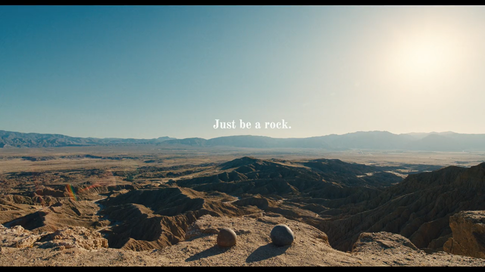

My Favourite Scene in Everything Everywhere All at Once...

This scene was a shift after all of the chaotic scenes that just happened. It was quiet. It was nice.
The movie had to give its message, and it was wonderful that they decided to do it in the quietest way possible.